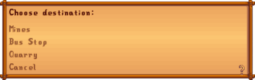
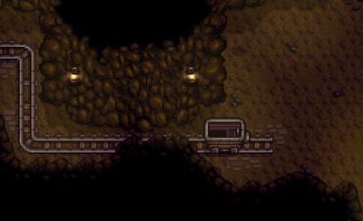
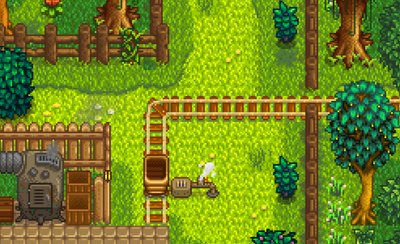
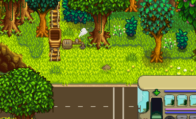
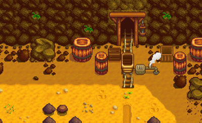

Minecart
(Redirected from Mine Cart)
Jump to navigation
Jump to search

Destinations available from Pelican Town
The Minecart is a method of travel unlocked after completing the Boiler Room Bundles or by purchasing "Minecarts" from the Joja Community Development Form at JojaMart for  15,000g. They are available for travel the next day.
15,000g. They are available for travel the next day.
Minecarts allow the player to travel between four destinations throughout Stardew Valley.
Mines
 |
 |
Nearby locations:
Pelican Town
|
 |
Nearby locations:
Bus Stop
|
 |
Nearby locations:
Quarry
|
 |
Nearby locations:
Notes
- The Quarry is not available until it becomes accessible by fixing the bridge via completion of all Crafts Room Bundles or purchasing "Bridge" from the Joja Community Development Form for
 25,000g.
25,000g.
| Locations | |
|---|---|
| Locations | Backwoods • Beach • Bus Stop • Calico Desert • Cindersap Forest • Farm • Farm Cave • Farm Pond • Graveyard • Ginger Island • Mastery Cave • Minecart • Mines • Mountain • Mutant Bug Lair • Pelican Town • Quarry • Quarry Mine • Railroad • Secret Woods • Sewers • Skull Cavern • Summit • Tunnel • Volcano Dungeon • Witch's Swamp |